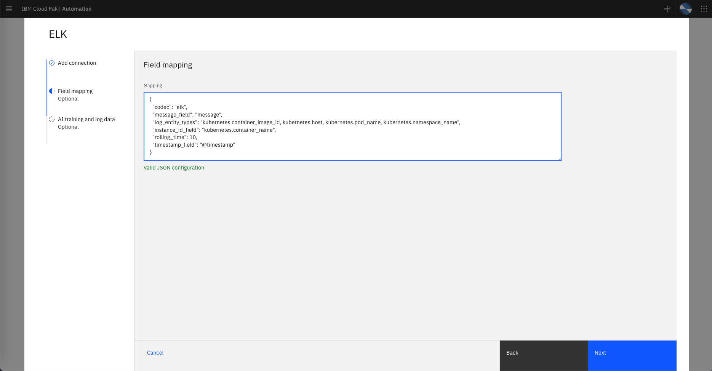

Welcome to the Cloud Pack for Watson AIOps v3.3 Lab
For full product documentation visit this link.
Lab Overview
>>> TBD >>> Add Lab overview steps.
Lets start by connecting to the Cloud Pack for Watson AIOps (CP4WAIOps) console. Get the URL and login credentials from the Lab Parameters Table.
Define the EFK Integration
EFK is a variant of ELK (Elasticsearch, Logstash, and Kibana). EFK is a suite of tools combining Elasticsearch, Fluentd, and Kibana that functions as a log aggregation tool. To simplify the installation and configuration effort for installing the different components of the EFK stack on OpenShift, we leverage the OpenShift Logging library from OpenShift. OpenShift customers that prefer not to spend part of their budget on a commercial log aggregator such as Humio, Splunk, or LogDNA, more than likely use the OpenShift Logging library.
To have AI Manager collect logs from the EFK installation that leverages the OpenShift Logging library, you need to define an EFK integration. The lab will provide the values that you should use for defining the EFK integration.
From the Home page, under Overview clik on Data and tool connections on the left side of the page. Click on the Add connection button on the top right. On the ELK card, select Add connection. Take a moment to read the connection overview on the right side slider, then click on Connect, as shown in the following screen.

Complete the ELK, Add connection form, with the following values:
-
Name: Name of the ELK integration, for exampleEFK for QOTD. -
ELK service URL: Get the service URL for the EFK installation from the Lab Parameters Table. -
Kibana URL: Get URL for Kibana from the Lab Parameters Table. -
Authentication type: Set this value toToken. -
Token: Get the token from the Lab Parameters Table. -
Kibana port: Use443for this field.
Click on the Next button.
Field mapping: Use the mapping shown below instead of the default mapping provided on the ELK integration. Make sure you see theValid JSON configurationmessage after that:
{
"codec": "elk",
"message_field": "message",
"log_entity_types": "kubernetes.container_image_id, kubernetes.host, kubernetes.pod_name, kubernetes.namespace_name",
"instance_id_field": "kubernetes.container_name",
"rolling_time": 10,
"timestamp_field": "@timestamp"
}
- Click on the
Test Connectionbutton and confirm you get Test Succeded
Click on the Next button.
-
Data flow: Turn this on. We will ingest historical data that we will use for training. -
Mode: Select theHistorical data for initial AI trainingoption.- Start date: April 23, 2022
- End Date: April 27, 2022
-
The following screens show the form update flow (note that config values may be different in the screen)




Finally, click on the Done button. After some time, you will see the message Connection completed. IBM Cloud Pak for Watson AIOps has successfully processed your request
>>> TBD >>> Add step to verify completion of 1 day of log data load
Define the Instana Integration
The CP4WAIOps will consume topology information from Instana therefore we will configure the integration between the CP4WAIOps and Instana.
Lets verify first that there is no topology data in the system. From the Home page, clik on Resource management under Overview on the left side of the page. On the Resource management page, make sure there are no Applications, Resource groups nor Resources defined, as shown below
>>> TBD >>> Replace screen shot

Now, lets define the Instana integration. From the Home page, clik on Data and tool connections under Overview on the left side of the page. Click on the Add connection button on the top right. On the Instana card, select Add connection. Take a moment to read the connection overview on the right side slider, then click on Connect, as shown in the following screen.
Enter the following Add connection information:
-
Name: The display name of your connection, for exampleInstana connection. -
Description: An optional description for the connection. -
Endpoint: Get the URL for the Instana Endpoint from the Lab Parameters Table. -
API Token: Get the API Token from the Lab Parameters Table. -
Deployment options: Selectlocal(Note that it is possible to deploy an Instana conection gateway remotely, but in this lab we will deploy in the samelocalcluster).
Click Next.
Enter the following Collect topology data:
-
Enable data flow: Set this toggle button to on (green). -
Time window(seconds): Leave as it is. This is the windowSize within the Instana API. -
Connection Intervals(seconds): Leave as it is. This is how frequently to run the job to collect topology. -
Application name allowlist pattern: This allows to select from the set of applications that Instana is "observing" which one we will pull data from. In this Lab, we will pull topology data from a single application called qotd. Type inqotd. -
Import Instana application perspectives as Cloud Pak for Watson AIOps applications: Make sure this toggle button is set toon(green). This option will save us some time as we don't need to manually create in CP4WAIOps an application that group the topology resources that we pull from Instana. In CP4WAIOps, an application represents a group of resources put together.
Click Next.
Enter the following in Collect event data:
Enable data flow: Slide this toggle button to off (grey). We will not collect event data in this Lab.
Click Next.
Enter the following in Collect metric data:
Enable data flow: Slide this toggle button to off (grey). We will not collect metric data in this Lab.
Click Done.
Now, lets verify that CP4WAIOps actually received topology data.
From the Home page, clik on Resource management under Overview on the left side of the page. On the Resource management page, you will see a new application defined called qotd as shown below:

Click on the application qotd and you will see the topology resources related to this application as shown in the picture below. Feel free to zoom-in to see details.